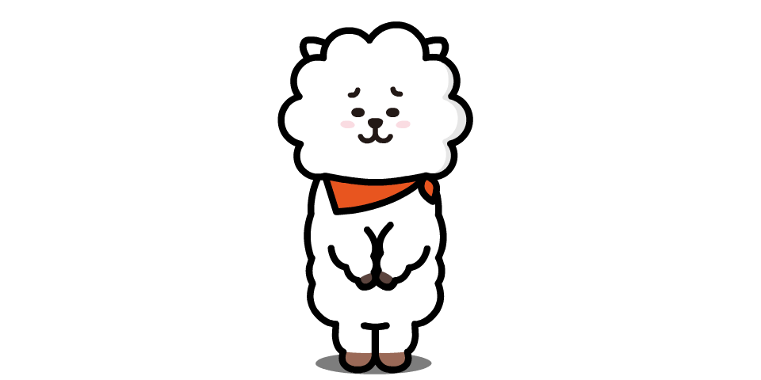
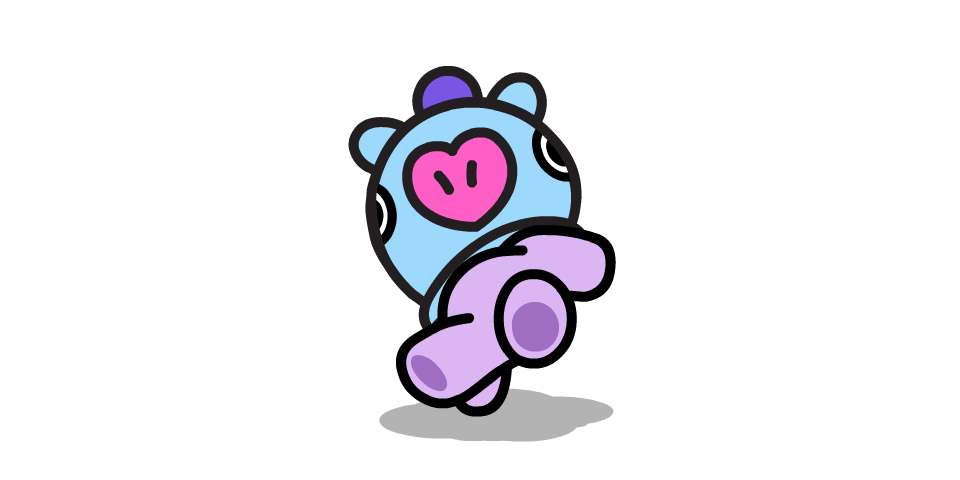

BT21: Conoce a los personajes creados por BTS 방탄소년단
BT21
Seguro que muchos de ustedes, ARMY o no, han visto en algún
lugar esos dibujos llamados BT21 que están causando un verdadero
revuelo entre el fandom de BTS.
¿Quieres saber más sobre ellos? ¡Quédate y únete a la fiebre BT21!
BT21 es el resultado de una colaboración entre la famosa marca Line Friends y BTS.
El 25 de septiembre de 2017 apareció en Twitter una nueva cuenta llamada “BT21” que
despertó curiosidad en el fandom, así como un sinfín de teorías. Un simple tweet con
el dibujo de un conejo que preguntaba “¿De quién es el dibujo?”. Tras este, otros 6
tweets iguales, pero con diferentes imágenes, fueron apareciendo ese mismo día.
Días más tarde el misterio quedó resulto: aquellos graciosos dibujo formaban parte de la
nueva colección de emoticonos de Line que habían sido creados por BTS en una colaboración.
¡Line friends contaba ahora con 8 nuevos personajes!
Aquello despertó (todavía más) la curiosidad de ARMY que estaba impaciente por saber quien
había dibujado qué, ya que era el gran misterio que todavía no se había resuelto.
Y aquella incógnita no se descifró hasta que el canal de Youtube, BT21, abrió. Su primera publicación,
un trailer, fue el adelanto de una serie de 13 episodios en el que muestran todo el proceso de creación
de los nuevos personajes de LINE Friends.
En estos vídeos podemos encontrar todo tipo de información acerca de BT21 y sus 7 miembros.
Como por ejemplo de donde viene BT21 (es la fusión entre BTS y Siglo 21) o los gustos y aficiones
de cada uno, características propias que los llenan de vida: Mang es una bailarina, Cooky es invencible
cuando se enfada, a Koya le encanta dormir... También podemos ver cuál fue el dibujo que menos cambios
sufrió a lo largo de todo el proceso (TATA) o el que más (Mang o Shooky), quienes estaban más decididos
en cuanto a apariencia (TATA) o nombre (Jin y RJ, o Jungkook y Cooky).
Personajes de BT21
Pero... ¿qué es BT21? Tal y como BTS va explicando a lo largo de los vídeos, BT21 es un
grupo de amigos, y, además, un grupo de idols trainees que está formado por: TATA, Chimmy, Cooky,
Shooky, RJ, Koya y Mang.
La historia de este singular grupo comienza cuando TATA, procedente del país BT, quiere conocer el mundo
ya que es un ser bastante curioso. Para ello se monta en su robot, VAN, que lo lleva, accidentalmente,
hasta el planeta Tierra. Una vez aquí, descubre por casualidad una valla publicitaria con un vídeo de un
grupo de idols (BTS) y decide que él también quiere ser igual de famoso y reconocido, quiere convertirse
en un "universtar". Así, emprende un viaje para reclutar a diferentes personajes para su grupo de idols,
que pasa a llamarse BT21.
Como hemos mencionado más arriba, todos los personajes tienen características y
personalidades que los hacen únicos. Para conocer un poco mejor a estos 8 personajes, les
dejamos a continuación una pequeña descripción de cada uno.
Nombre de los integrantes de BT21
TATA, el super curioso:
Del planeta BT, TATA es muy curioso sobre todo lo que le rodea.
VAN, el robot del espacio:
Robot del espacio, el protector de BT21. #guardián #vehículo #robot
RJ, la alpaca amable
Amable y educado, el más lindo mientras mastica. Usa una parka porque agarra frio fácilmente. #saludos #apacible #parka #masticar

CHIMMY, el cachorro pacional:
Nacido con pasión y esfuerza en todo. #pasión #lindo #capuchaamarilla
COOKY, el conejo rudo de roer:
Conejo peculiar que sueña con volverse fuerte. #cejas #músculoimaginario
SHOOKY, la galleta deliciosa:
Galleta mágica con poderes especiales. Le da miedo la leche. #mini #podercurativo #amigos
MANG, el pony bailarin enmascardo:
Mientras baila, MANG es más genial que nunca. Siempre usa su mascara. #narizenformadecorazon #mascara

KOYA, el koala pensador:
Inteligente, pero parece adormecido cuando en ralidad piensa profundamente. #organizado #orejasdesmontables
Debemos destacar, sí o sí, la figura de VAN. Fue la última incógnita de BT21 en salir a la luz. Cada miembro de
BT21 representaba a uno de los miembros de BTS, por lo que lo normal sería que solo existieran 7 nuevos
componentes para LINE friends, por lo que cuando aparecieron 8 de ellos las conjeturas empezaron.
No fue hasta hace unas semanas que RM, durante un directo, habló de VAN. Este componente de BT21 fue
creado por él mismo, su misión es ser el protector de BT21 y por ello, representa a ARMY.